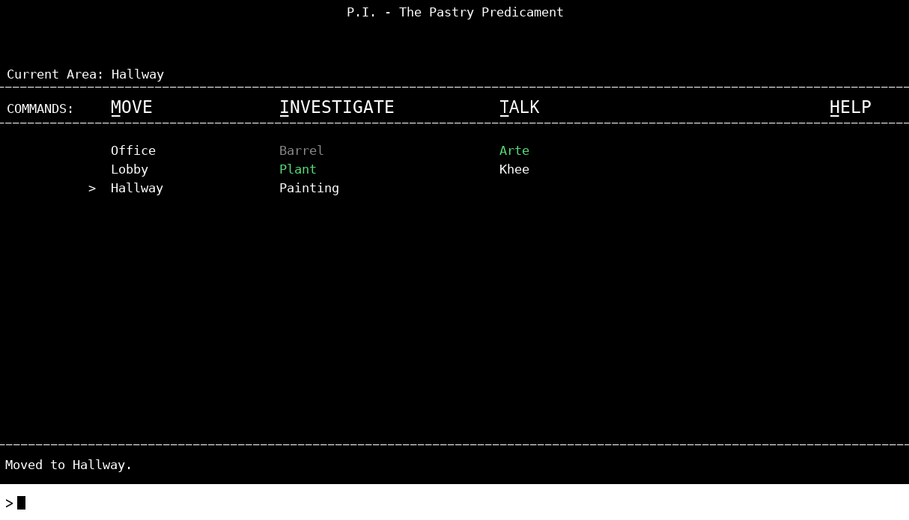
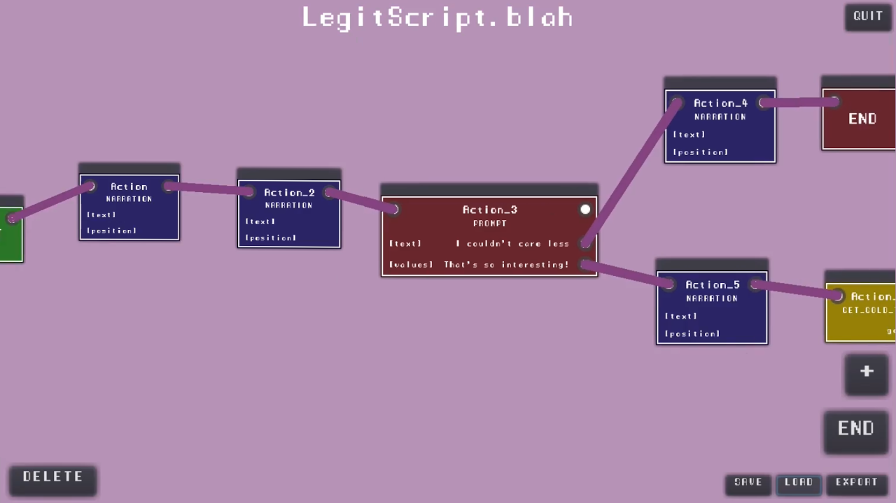

Overview

Narrative Designer | Systems Programmer
8 Bits to Infinity Text-Only Jam: December 2019 (Godot Engine; Solo)
"The Chartide Cases" has the player unraveling mysteries as a rookie detective in a fantasy world. Created for a text-only game jam, the game combines investigation with humor through a command-line interface.
I developed a custom visual script editor in Godot to manage the plethora of dialogue that I wrote for this game, as it features branching choices, interdependent dialogue, and 7 endings.
Responsibilities
- Conceptualized and programmed detective gameplay mechanics with a command-line interface in the Godot Engine.
- Integrated a unique narrative with branching dialogues and multiple endings based on player investigation.
- Developed a custom visual scripting tool within the Godot Engine to streamline dialogue management, enhancing the game's narrative flow and interaction logic.
Design Contributions
- The applauded “Recall” mechanic offers an investigative playstyle much more approachable than traditional text-adventures by allowing players to reiterate important story and clues they might have overlooked or forgotten.
- Devised a level populated by eccentric NPCs and whimsical objects to investigate, embedding the game with humor and fantasy elements.
- Designed four major non-playable characters to personify the Chartide Investigation Agency, as represented through hundreds of lines.
- Expressed dramatic and comedic timing through the speed at which characters’ dialogue is typed out.
- Composed two songs for different narrative beats and enhanced player immersion by synchronizing the game's cursor with the music's beat.
Player Reception
- Players were hooked by the humorous characterization and mysterious antics, voting The Chartide Cases for the Community Choice Award and leaving plenty of comments with great feedback.
- Polished and released a definitive post-jam build with new features and improved dialogue systems, with many improvements being inspired by player feedback and comments.
Challenges and Solutions
- Overcame content organization challenges by designing custom tools for dialogue interaction.
- Simplified navigation and auto-completion for player commands, significantly improving the text-adventure experience.
Media
- Link to the game on Itch.

